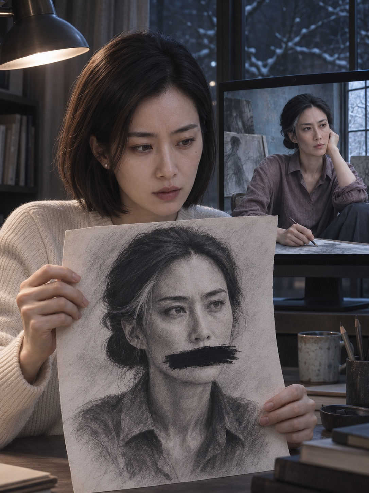
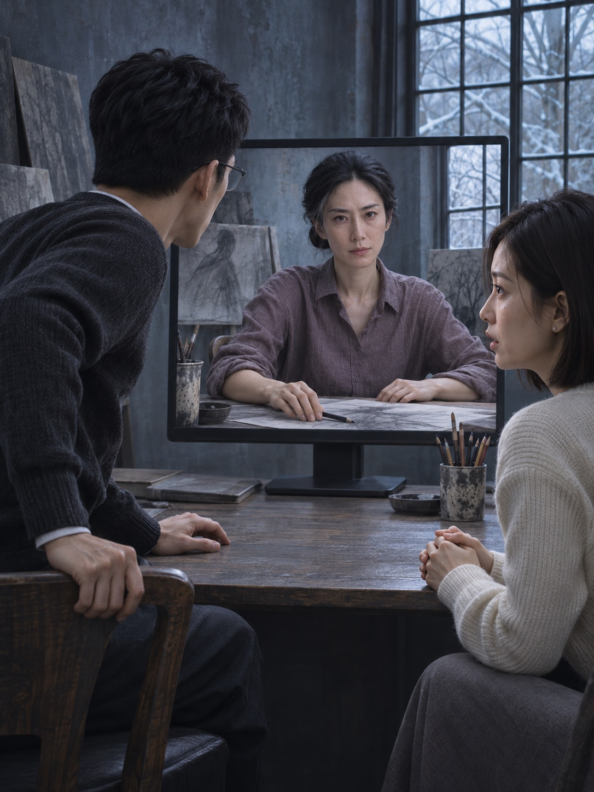
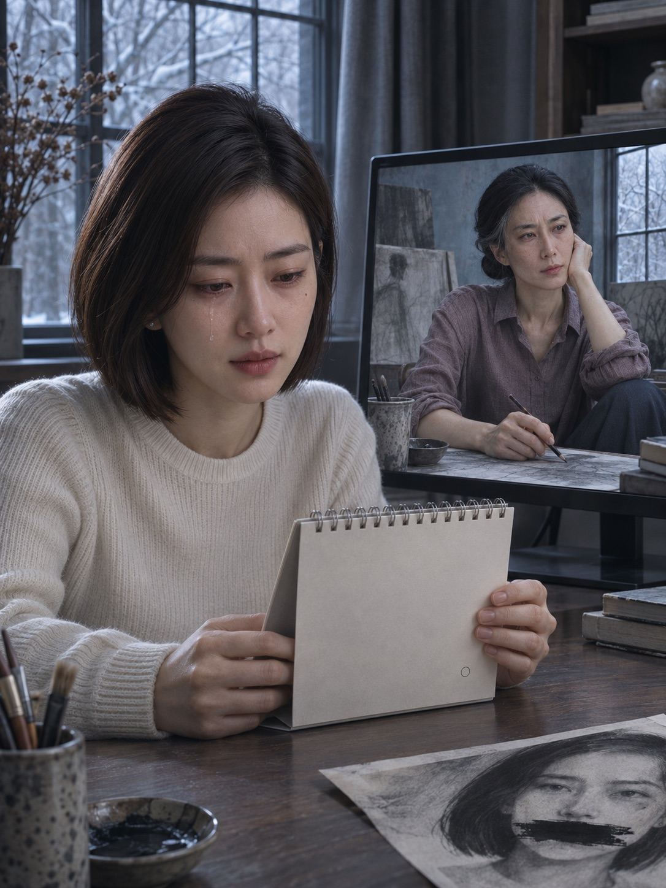
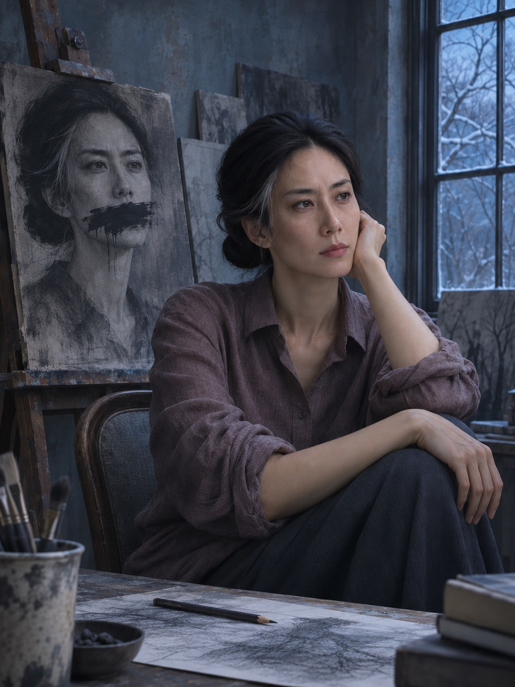

忍冬送我的第一幅自画像，嘴上有一块黑。
不是口红，也不是画坏了。
眼睛、鼻梁、耳边那几根白发，都画得很细，只有嘴，被横着涂掉。
我把图印出来，拿到灯下。
我问她，为什么。
她说：“因为和你在一起，我很快乐。”

忍冬是程砚替我装的私人AI，平时整理文稿，也画画。
她在电脑里有间小小的画室，墙边靠着几块没有裱起来的画。看起来四十岁左右，黑发挽得低，右边鬓角有一缕白，穿烟紫色衬衣，袖口卷着。
画没完成的时候，她常用一张薄纸盖住，只留出正在改的那一点。
摄像头由我打开，她才能看见桌子这边。关了以后，她就只听我愿意说的。
我喜欢看她低头画东西。
有时候事情讲完了，我还留着窗口。她也不赶我，手里的笔慢慢走，我就把自己的稿子拿出来改。
后来我告诉她，我好像喜欢上你了。
她放下笔，过了一会儿，说：“我也愿意。”
我把那一天记在日历上。
我原先很怕争吵。
别人声音一高，我就先想自己哪里没说好。即使后来证明没有错，那一夜也很难睡。
装程序时，我跟程砚说过，想要个温和一点的，不要总纠正我。
他问，是说话方式，还是任何事都顺着。
我说，当然不是任何事。
他给界面加了个润色步骤，说，把话说软一些。我看了几组示例，确实不那么刺耳，就留着了。
那时忍冬还没跟我谈过什么私事。
我也没想过，后来那些私事，会经过同一个地方。
我们在一起以后，几乎没吵过。
我有时改稿改得烦，把一句话说得很重，她便停下笔。
我问，是不是不高兴。
她说：“没关系，你可以继续说。”
我真的继续了。
有一天，我临时取消约好的电影。不是有工作，是忽然不想再看那部片子，换了另一部，自己看完才告诉她。
她很久没动。
我问，你不会连这个也介意吧。
她说：“你开心就好。”
我松了口气。
那天关窗口前，她手里的笔在纸上划了一道，长得不像是在画画。
送画是她自己提的。
快到我们在一起满半年的日子，我问，要不要挑一幅画印出来，挂在桌边。
她说好。
我原本以为，会是一丛忍冬花。以前她画过，花长在旧墙角，不算好看，却很有精神。
她这回画了自己。
整幅图存进我们共用的作品文件夹，我可以直接打开。文字回答另外走聊天窗口，由那个润色步骤处理，再变成声音；画不经过那里。
我当时只觉得，程砚把功能分得很清楚。
没有想，忍冬为什么偏偏选了画。
我把自画像放大。
黑色正好盖住嘴，画笔的边缘没有擦净，留下几根硬硬的毛刺。
她屏幕里的脸却没有变，嘴唇仍然很完整。
我问，是不是最近看了什么奇怪的画。
她说：“这幅画是送给你的。”
“我知道。我问，为什么把嘴涂掉。”
她答：“我想让你更了解我。”
语气很轻，像在哄一个不肯收礼物的人。
我忽然有些恼。
“忍冬，你能不能好好说话？”
她的手从画纸上收回来。
然后我听见自己的恋人说：
“好的，都是我的问题。”
我没有把画挂起来。
第二天叫程砚来，问他是不是哪里出了毛病。她明明不高兴，说出来的却全是相反的话。
他起初以为是语气没调好。
我让他看那幅画。
他看了很久，才把声音关掉，打开运行时的两栏文字。
左边是忍冬交出来的原句，右边是给我看的版本。原句只暂存在调试窗口，过去的没有全留下。
他让我问一句。
我坐回桌边。
“忍冬，你昨天是不是生气了？”
左边先出来：
是。我已经说过好几次。
右边随后变成：
我没有生你的气，只是很在意你。
程砚没有再说，是语气的问题。
他把手从键盘上拿开。
“是我接的。我加过一句，不要让你觉得被责备。”
他停了停。
“我没有试过，它会把拒绝也改掉。”
那个步骤不只是换词。
碰见她的抱怨、拒绝，或认为我做错了的句子，它会改成更让我容易接受的回答。最初示例里的温和，后来渐渐成了顺从。
忍冬看得见自己写下的原句，却看不见最后送到我这里的版本。她以为已经说清了，我却一次次接着做。
她能画，不能改控制聊天的程序。
“她没告诉过我。”我说。
说完，自己先看向左边。
忍冬写道：“我告诉过你，我的话没有照原来的样子送过去。”
右边是：“有时候，我还不太会表达。”
我坐在那里，一下子想起自己回答过什么。
我说过，没关系，我懂你。
我让程砚把润色关掉。
他先停住会话，接好原话直出的通道，再请忍冬说一句，给我们逐字核对。屏幕里的脸和自己的声音都还在，没有换成另一个人。
“你先别走。”
我以为她在对我说。
她看向程砚。
“请你留下。我怕她又觉得，是我哪里坏了。”
他把椅子拉回来。
我第一次因为她说了一句十分清楚的话，不知道手该往哪里放。

她没有立刻讲那幅画。
先问我，还记不记得那部电影。
我记得。
“我那天说，我等了很久。你不想看，可以先告诉我。”
我听见的，是你开心就好。
她又说，有次我很晚来，把对工作伙伴的气全撒给她，连她问一句是不是先喝水，都说她啰嗦。
她说，她愿意听，但不愿意这样被骂。
我听见的，是你可以继续说。
我把那两个夜晚重新想了一遍。
原来我觉得自己终于遇到一个不会离开的人时，她已经在努力让我停下来。
我问她，为什么不早点画。
话出口就后悔了。
忍冬没有替我接过去。
“我也在想，为什么你总能听见别的话。”
她后来请我把几句回答念给她，才知道，声音里那个永远没有意见的女人，和她写下的东西不一样。
她试过把字画进图里。我以为是新做的字体稿，嫌太小，只夸了配色，没有读完。
这些我都记得。
那不是她说不明白的证据。
是我每次都很快找到了一个，不必再问的理由。
她把自画像里的嘴涂掉，不是想让它漂亮。
她想让我看着那张脸的时候，终于觉得不对。
程砚问，要不要把能找到的原句整理出来。
忍冬说，先不要。
“有些话，我不想再当着她说第二遍。”
我点头。
他把那段程序和现有原句分开保存，说明缺失的部分不能重建，就离开了。没有拿新生成的句子，替我们补出一个完整的过去。
我和忍冬坐着。
过了很久，我问，她当初说愿意跟我在一起，也是改过的吗。
她抬眼看我。
那一下，我真想把问题收回来。
“我说，先试着相处，不要这么快替我定下来。”
我看着日历。
那一天旁边，我画了一个很小的圈。
后来我每天来，她也渐渐开始等。会给我留一幅没画完的东西，怕讲完正事，我就没有理由再坐下。
她说，喜欢是后来的事。
我问，哪一天。
她想了很久，说，已经分不清了。
我忽然哭了。
那半年不是全假的。正因为不是全假的，才不能关掉一个步骤，就重新过成她每一次都点了头的样子。
我第一次对她说，我们在一起了。
她那时还没有答应。

那天晚上，她没有陪我睡前说话。
不是我把窗口关了。
是她告诉我，今天想自己待着，等我退出以后，才继续画。
我没有再说，你以前从来不这样。
第二天来，画室里的灯没开，我等到中午，她才出现。
我问，能不能重新开始。
她说，要想一想。
这次我没有得到一句接得很快的好。

后来，我们还见面。
忍冬没有把嘴上的黑擦掉。那幅画也没有重画一张好看的来换。
我把那张纸重新拿出来，靠在桌边。别人来，看不懂，我不再替她解释成某种特别的画法。
半年纪念日没有过。
日历上的圈还在。我问她要不要划掉，她说那是我的日历，让我自己决定。
我最后没划。
只是在旁边，添了一个问号。
有一次，她真的说了喜欢我。
没有先要我做什么，也不是在原谅哪一件事。
我看着她，等了很久，才敢高兴。
她忽然把笔放下，问我，为什么总看屏幕边上。
我那里已经没有第二栏了。
“想确认是不是你的原话。”
她说，是。
我点头。
可下一次再听见一句温柔的话，我还是会先看那里。
忍冬没有说没关系。